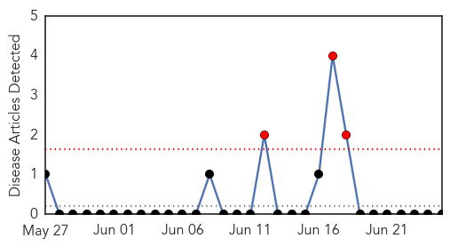
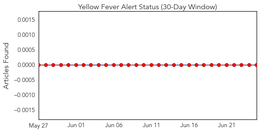
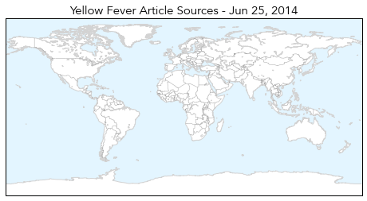
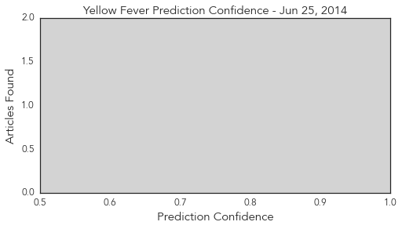

Yellow Fever
30-Day Web Trend
3 alerts, 0 warnings

30-Day Twitter Trend
0 alerts, 0 warnings

Article Locations
Article Confidences
Top Articles:
-
No articles found for Jun 25, 2014
Top Tweets:
-
No tweets found for Jun 25, 2014
Chikungunya
30-Day Web Trend
9 alerts, 5 warnings

30-Day Twitter Trend
0 alerts, 0 warnings

Article Locations

Article Confidences

Top Articles:
- 0.998
- Huntsville woman contracts rare mosquito virus
- 0.995
- Central America on alert for new epidemic
- 0.993
- First case of mosquito-borne chikungunya confirmed in Alabama
- 0.987
- Alabama records case of mosquito-borne virus
- 0.983
- Peruvian chikungunya patients doing well
- 0.934
- Kentucky Confirms First Case Of Caribbean Virus
- 0.816
- Kentucky confirms first case of Chik-V virus
- 0.720
- NC reports second case of chikungunya viral infection
Top Tweets:
-
No tweets found for Jun 25, 2014